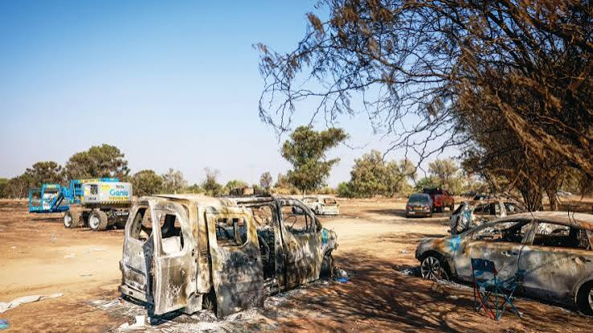
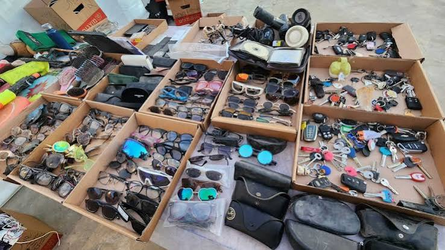
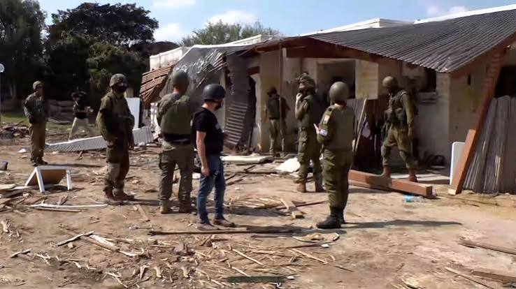

After the events of October 7, 2023, many objects and materials were left behind in the places that were attacked. These objects became part of the physical evidence and helped show what happened during the attack.
Cars, motorcycles, military vehicles, and other forms of transportation were left behind at different locations. Some vehicles were damaged or burned during the attacks and became visible signs of the destruction.

Personal belongings such as clothing, bags, phones, keys, and other everyday objects were found in homes, communities, roads, and other locations. These objects showed how suddenly many people had to leave or were affected by the events.

Houses, public buildings, and other structures were damaged or destroyed. Broken doors, windows, furniture, and household objects remained in many of the affected communities.
